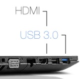

Clique nas áreas vermelhas para ver mais detalhes

Com a tela HD LED de 15,6” (1366x768) e a tecnologia Intel® HD Graphics 5500 você poderá assistir seus filmes e vídeos com muita qualidade. Além disso, alguns modelos, possuem placa gráfica dedicada AMD Radeon com 2GB, perfeito para você jogar e editar vídeos com muito mais agilidade. Som mais definido e consistente com a tecnologia Dolby® Advanced Audio™ v2.
Fácil de limpar, ergonômico e silencioso. Permite uma digitação mais confortável e reduz a probabilidade de erros. Teclado numérico facilita o dia a dia, principalmente para quem trabalha frequentemente com planilhas e dados numéricos.
O G50-80 possui porta USB 3.0, que permite realizar transferências de arquivos até 10x mais rápido que as tecnologias USB anteriores. Porta HDMI para você conectar seu notebook a uma televisão Full HD e assistir filmes e vídeos em alta definição. Possui, também, Leitor de cartões 2 em 1 (SD/MMC).
Com a Câmera Integrada Lenovo G50-80 de qualidade 1080p e 100 fps, você fica ainda mais perto de seus contatos das redes sociais. Aproveite cada detalhe da conversa vídeo, sem travamentos e distorções.